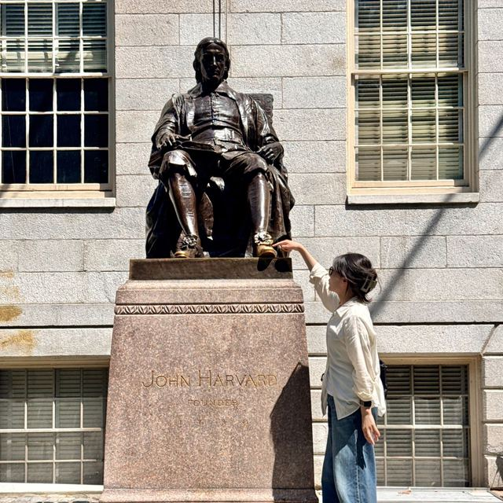
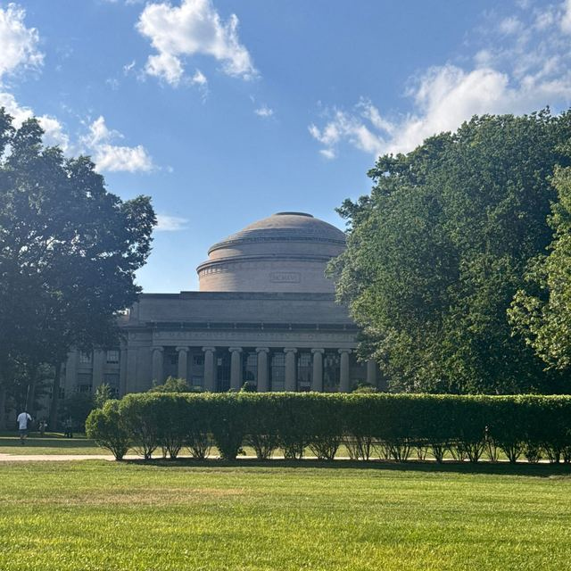
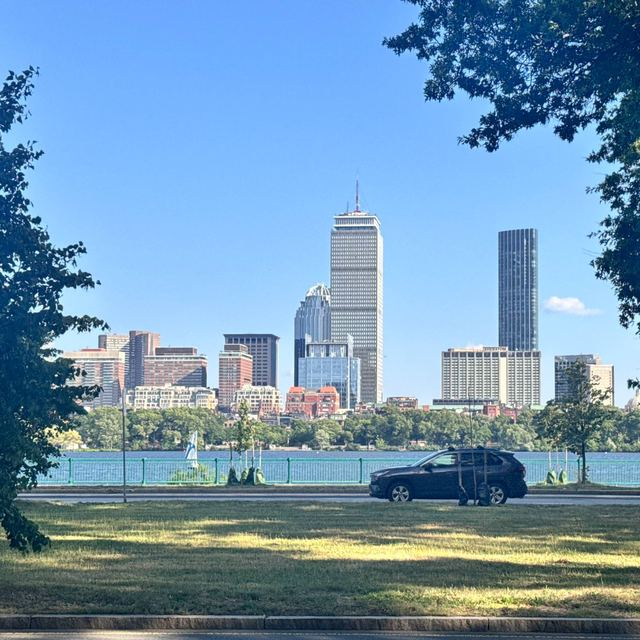

Travels
BOARDING PASS
- PASSENGER
- SO YEON KIM
- FLIGHT
- Ph.D course
- DEPART
- MAR 2024 KOREA
- ARRIVE
- FEB 2028 (expected)
Map: Natural Earth
-
 , open full size
, open full size
Les Houches, France 45.89° N, 6.80° E -
 , open full size
, open full size
Geneva, Swiss 46.20° N, 6.14° E -
 , open full size
, open full size
Zürich, Swiss 47.38° N, 8.54° E -
 , open full size
, open full size
Linz, Austria 48.31° N, 14.29° E -
 , open full size
, open full size
Prague, Czech 50.08° N, 14.44° E -
 , open full size
, open full size
Budapest, Hungary 47.50° N, 19.04° E -
 , open full size
, open full size
München, Germany 48.14° N, 11.58° E -
 , open full size
, open full size
Tallinn, Estonia 59.44° N, 24.75° E -
 , open full size
, open full size
Helsinki, Finland 60.17° N, 24.94° E -

, open full sizeHarvard, Cambridge 42.37° N, 71.12° W -

, open full sizeMIT, Cambridge 42.36° N, 71.09° W -

, open full sizeBoston, USA 42.36° N, 71.06° W